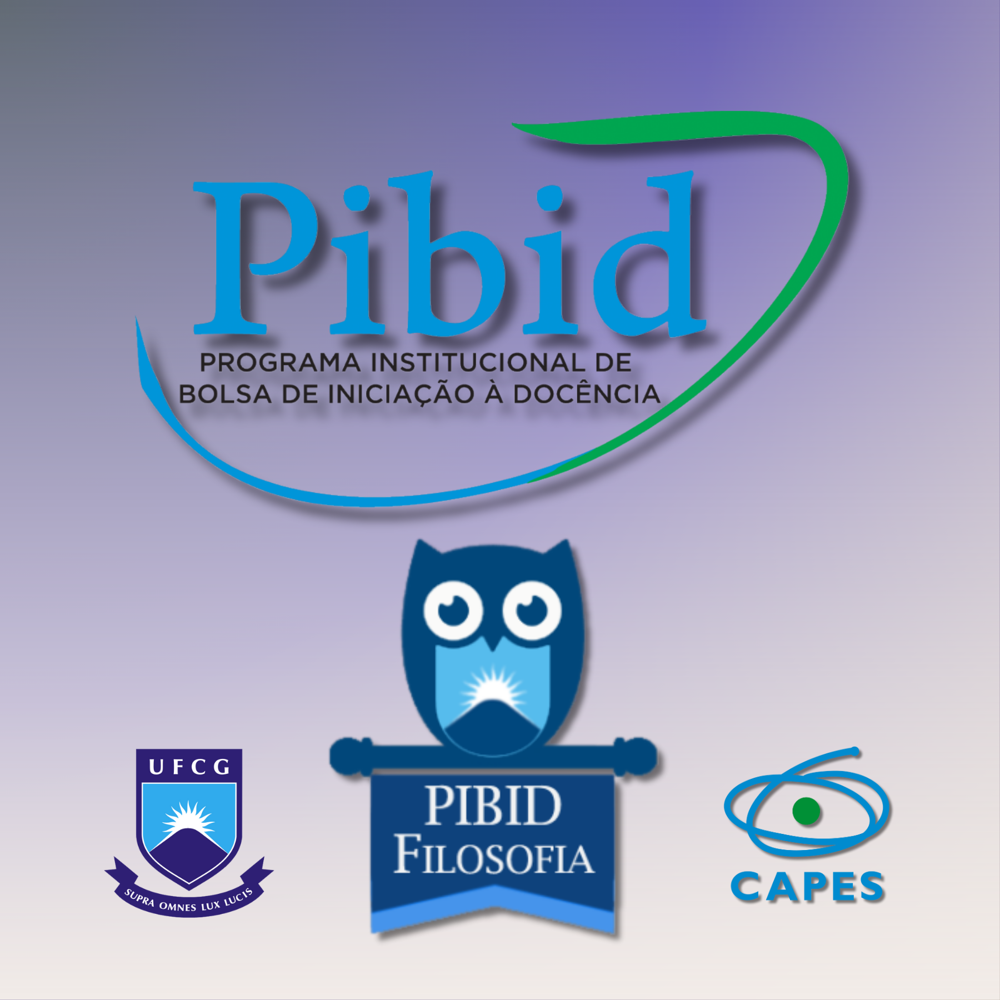

PIBID Φιλοσοφία-UFCG
2022~2024
PIBID Φιλοσοφία-UFCG
2022~2024


Ⅰ. Bem-vindo
É com grande prazer que apresentamos a todos este repositório online, um marco significativo no âmbito do Programa Institucional de Bolsas de Iniciação à Docência (PIBID) de Filosofia da Universidade Federal de Campina Grande (UFCG) para o período 2023-2024. Este programa governamental tem como objetivo aprimorar a formação de professores e estimular o ensino de qualidade nas escolas públicas por meio de atividades práticas e teóricas envolvendo estudantes de graduação, Agradecemos profundamente à Coordenação de Aperfeiçoamento de Pessoal de Nível Superior (CAPES) por apoiar esta iniciativa de valor inestimável.
Este site foi construído pelos próprios integrantes do programa, os bolsistas,
com o intuito de disponibilizar informações relevantes sobre as atividades
desenvolvidas pelo grupo na Escola de Ensino Médio E.C.I. Félix Araújo, em
Campina Grande-PB. Acreditamos com convicção que o compartilhamento de nossas
experiências pode ser um valioso contribuinte para o aprimoramento do ensino de
filosofia, e por conseguinte, para o desenvolvimento de uma sociedade mais crítica
e consciente.
Neste espaço, apresentamos com orgulho a equipe responsável pelo projeto,
que inclui a supervisora e o orientador, além dos bolsistas que
atuam diretamente na escola. Também é possível encontrar informações releva
ntes sobre a escola, bem como as atividades desenvolvidas pelos bolsistas,
organizadas por mês, e os documentos relacionados ao programa. Além disso,
oferecemos uma seção com artigos cuidadosamente selecionados sobre temas
relevantes para o ensino de filosofia.
Este repositório é fruto de um esforço coletivo de estudantes dedicados e comprometidos com a educação pública. Esperamos sinceramente que este espaço possa inspirar outros alunos da graduação e professores a se engajarem em iniciativas similares e a contribuírem para o desenvolvimentoda educação em nosso país. Junte-se a nós nessa jornada de aprendizado e reflexão sobre a importância da filosofia na formação de cidadãos críticose conscientes.
Publicado pela primeira vez em 20 de março de 2023; revisão substantiva segunda-feira, 19 de abril de 2023

Tendo como ponto de partida a perspectiva do célebre filósofo alemão Immanuel Kant, a educação é o alicerce essencial para a formação de um ser humano crítico e autônomo. Em outras palavras, o homem não é meramente um ser passivo, submetido à natureza, mas sim um ser moldado pela educação que recebe.
Nesse sentido, o PIBID - Programa Institucional de Bolsas de Iniciação à Docência - surge como uma iniciativa imprescindível para a formação de professores comprometidos com a reflexão crítica e a prática inovadora no âmbito da educação brasileira. Por meio do programa, os futuros educadores têm a chance singular de vivenciar a realidade da sala de aula, desenvolver habilidades e competências, e, sobretudo, refletir de forma crítica e reflexiva sobre a prática pedagógica.
Dessa forma, o PIBID não apenas contribui para a formação de prof essores mais capacitados e preparados para enfrentar os desafios da educação, mas também para a construção de uma sociedade mais consciente e crítica, con forme preconizado por Kant. Afinal, para que o homem alcance todo o seu potencial, é preciso que a educação desempenhe o seu papel transformador e formador d e cidadãos.
Link da publicação Clique Aqui!